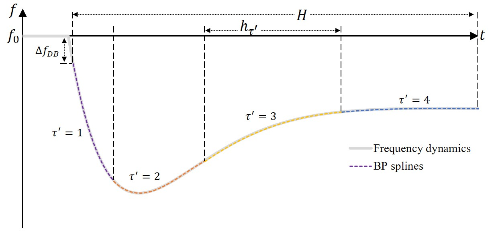
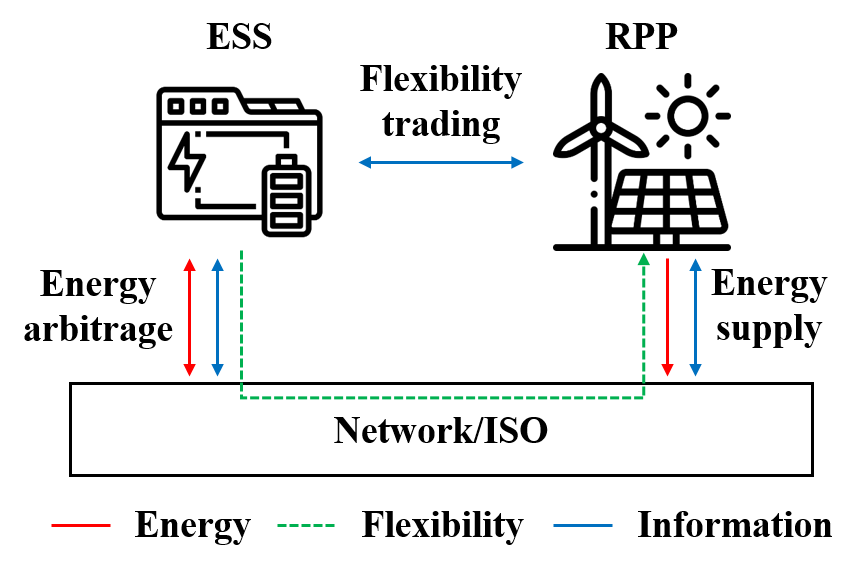
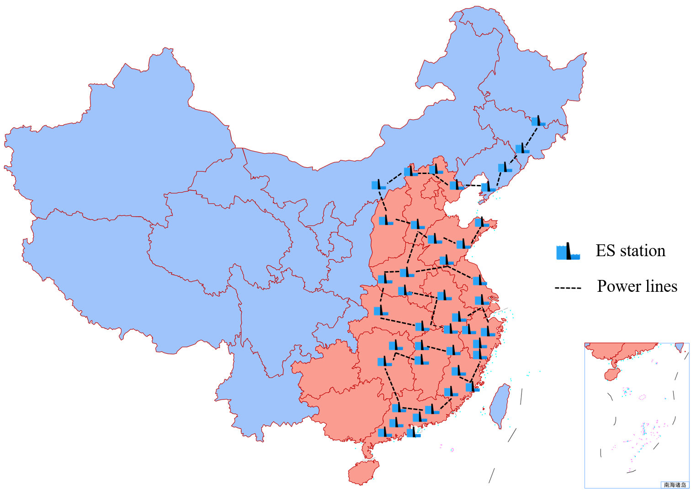
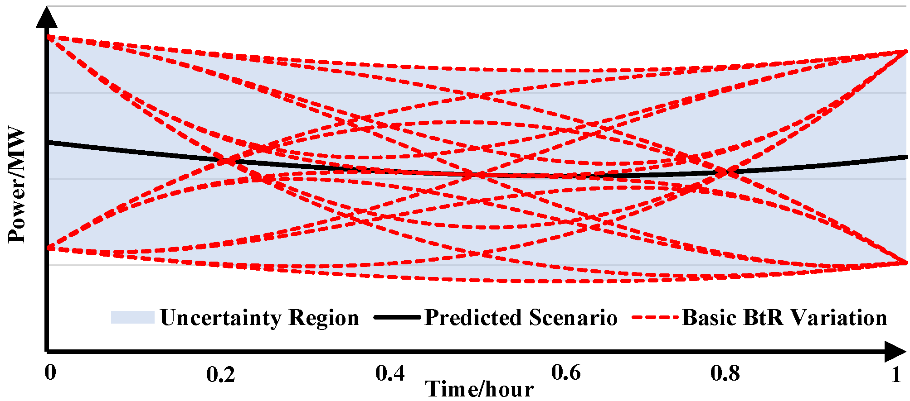
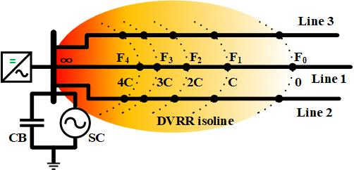

Research
My research interests focus on the mathematical optimization and learning techniques for flexibility and resilience of power/energy systems under uncertainty, which is critical in promoting the sustainable and low-carbon transition of the energy sector. Toward this target, I think theory and applications of energy storage will be the most critical enabling technologies.
Methodologies: Continuous-time optimization, robust optimization, bilevel optimization, machine learning
Application: Power/energy system, flexibility & resilience, energy storage, power market, energy bank
Frequency-Secured Unit Commitment
|  | As we replace conventional synchronous generators with renewable energy, the frequency security of power systems is at higher risk. This calls for a more careful consideration of unit commitment (UC) and primary frequency response (PFR) reserves. This study studies frequency-secured UC under significant wind power uncertainty. We coordinate the thermal units and wind farms to provide frequency support, wherein we optimize the variable inverter droop factors of the wind farms for higher economy. In addition, we adopt distributionally robust chance constraints (DRCCs) to handle the wind power uncertainty. To depict the frequency dynamics, we incorporate a differential-algebraic equation (DAE) with the dead band into the UC model. Notably, we apply Bernstein polynomials to derive tight inner approximation of the DAE and obtain mixed-integer linear constraints, which can be computed in off-the-shelf solvers. Case studies demonstrate the tightness and effectiveness of the proposed method in guaranteeing frequency security. Research outputs:
|
Configuration Optimization and Operation Strategy of Energy Storage Stations for the Power System
|  | Renewables, widely regarded as the predominant energy in the future, have primary responsibility for future power supply adequacy and thus are becoming the main flexibility demander considering their self-induced uncertainties. This paper proposes a novel storage right-based hybrid discrete-time and continuous-time (HT) flexibility trading between energy storage station (ESS) and renewable power plants (RPP), where ESS sells flexibility for profits and RPPs buy flexibility to hedge power shortage risks. The flexibility package (FP), composed of energypowerramping capacity right and stored energy sell/recycle, is proposed as the trading product to reach the higher profit for ESS and to provide the more customized selection for RPPs. The HT bilevel optimization is proposed for the flexibility trading, where the upper-level discrete-time (DT) optimization decides the arbitrage schedule and FP price of ESS and the lower-level continuous-time (CT) optimization decides the bidding strategy and FP order of each RPP. The enhanced solution space transformation and the KKT condition method are utilized to reduce the HT bilevel optimization into common DT optimization which is then linearized into mixed-integer linear programming for tractable calculation. Case studies validate the higher profits of ESS and the lower power shortage risks of RPPs under the proposed method. Research outputs:
|
|  | Driven by the carbon peak and neutrality goals, the rapid development of renewables will significantly change the structure and distribution of energy resources of the power system in China, which also brings great opportunities and challenges for the development of energy storage in the power system. First, the locations of the loads center and the changes of the structure and distribution of energy resources are studied, based on which the new pattern of future power system is predicted, i.e., from-around-to-inside power transmission. Then, the critical role of energy storage in supporting the secure, efficient, and low-carbon operation of the future power system is analyzed. On this basis, the development superiority of pumped hydro storage in the new pattern is highlighted considering the topographical characteristics of China. Accordingly, the pumped hydro storage-predominated energy storage grid is proposed, whose necessity is further analyzed from the perspective of system-wide active power balance. Finally, key technologies for the energy storage grid are investigated, including planning, operating, and market, and some thoughts on the development of the energy storage grid are further provided. Research outputs:
|
Data-Adaptive Robust Optimization for Unit Commitment under Wind Uncertainty
 |
Correlations help narrow the uncertainty region in robust unit commitment (RUC) of power systems for economic improvement, yet in high-dimensional cases, state-of-the-art full-dimensional correlation (FDC) based uncertainty set methods suffer from either conservativeness or computational burden. This paper proposes the novel partial-dimensional correlation (PDC) aided convex-hull uncertainty set (CHUS) for RUC. The PDC-aided framework is established for the first time to utilize the accurate and accessible PDC instead of the assumed but inaccessible FDC, which provides a general formula that covers both the traditional correlation-ignored and the emerging FDC-based methods. The diamond-cut CHUS of correlation data is developed to approach the compact CHUS to reduce conservativeness under an acceptable complexity. The customized scenario-parallel algorithm is proposed for efficient calculation, which combines the extreme scenario-based constraint rebuild and the parallel computing-enabled column-and-constraint generation. Case studies demonstrate the effectiveness of the proposed method in enhancing both economic and computational efficiency. Research outputs:
|
|  | To guarantee the operational security of the renewable power system, the uncertainty of renewable energy generation (REG) should be fully considered. However, the traditional robust unit commitment (RUC) cannot access the variation of REG inside the operational period. Hence, this paper proposes the continuous-trajectory (CT) RUC considering the beyond-the-resolution (BtR) uncertainty. The critical impact factors characterizing the BtR variation are analyzed, and then the BtR uncertainty is modeled. The mathematical formulation of CT-RUC is derived and shifted from the time domain to the time-dependent function space so that the optimization can be tractably solved. The comparison between traditional RUC and CT-RUC demonstrates that the consideration of the BtR uncertainty can result in a more robust solution. Research outputs:
|
Coordination of Integrated Electricity and Natural Gas System
 |
The synergy between electric power systems and natural gas systems brings significant energy storage potentials yet challenges the modeling and solution techniques of partial-differential-equation (PDE) constrained optimization. This paper proposes a function-space optimization to coordinate multi-energy storage across the integrated electricity and natural gas system. Compared to general algebraic-space optimization, the proposed function-space optimization (FSO) uses continuous spatial-temporal functions as variables, for which time and space can be explicitly expressed and the PDE constraints of gas dynamics can be directly embedded into optimization. Considering the bidirectional energy conversion enabled by gas-fired units and power-to-gas, linepack gas storage and battery energy storage are coordinated through FSO to improve the operational economy. For tractable calculation, the Bernstein polynomial spline-based solution space transformation is adopted to transform FSO into mixed-integer linear programming. Case studies on a single-pipe example and two practical test systems are conducted and the simulation results validate the effectiveness of the proposed FSO method. Research outputs:
|
Security Defense for HVDC Receiving-End Power Grid
|  | Sufficient dynamic Var reserve (DVR) can efficiently enhance the immunity against continuous commutation failures (CCF) to avoid DC blocking and further security accidents in the line-commutated converter (LCC) based HVDC receiving-end power system. This article proposes the problem formulation and efficient solution algorithm for the DVR-constrained coordinated scheduling considering contingencies and wind uncertainties. The DVR sufficiency is proposed for the post-contingency CCF immunity in scheduling problems, which combines the voltage sensitivitybased DVR capacity calculation and the offline DVR requirement tests. HVDC transmission and W/Var sources are coordinately scheduled to accommodate contingencies and wind uncertainties and to improve the operational economy. The reduced event-based algorithm (REA) is developed to subdivide the complex scheduling problem and reduce the considered constraints for efficient calculation. Case studies demonstrate the guaranteed DVR sufficiency, the improved economy, and the enhanced computational efficiency of the proposed methods. Research outputs:
|